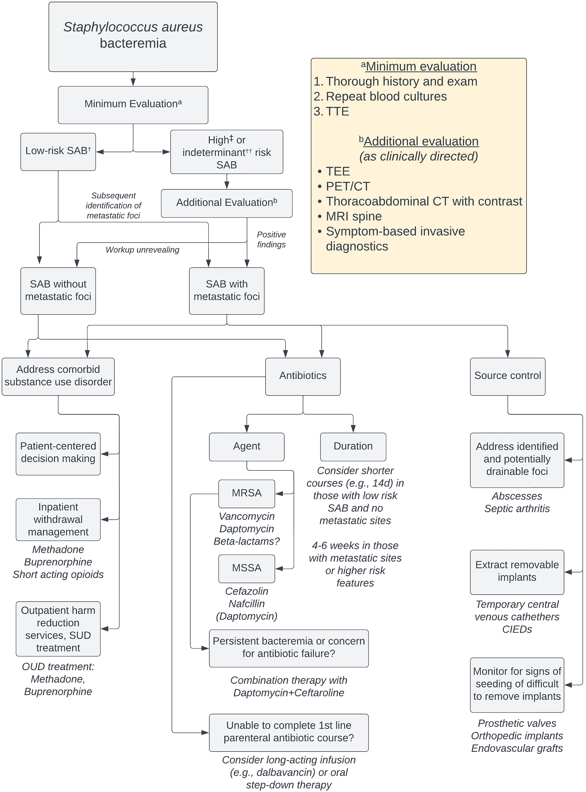
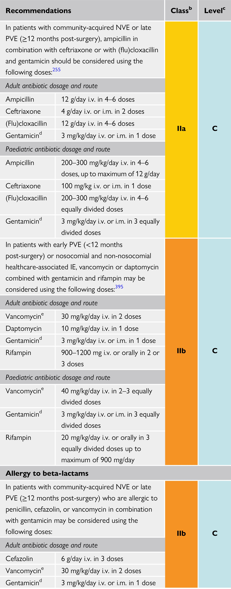

HIV Vaccination
- 建議每年施打一劑流行性感冒疫苗
Info
Ditched Notion for Obsidian for some time, as Notion takes forever to open a big, fat note. However, Obsidian isn’t very sharable without the paid Publish feature. Finally set up this blog so that I can access (some of) my notes while I’m seeing patients in the out-patient department or in jail!
My Notion site is still functioning, although a bit out-dated:
Green, susceptibility anticipated to be >80%; yellow, susceptibility anticipated to be 30% to 80%; red, intrinsic resistance or susceptibility anticipated to be <30%. 1, US Food and Drug Administration–approved agent; 2, synthetic tetracycline derivative; 3, imipenem-cilastatin–relebactam; 4, synthetic aminoglycoside; 5, polymyxin class. Abbreviations: KPC, Klebsiella pneumoniae carbapenemase; NDM, New Delhi metallo-β-lactamase. (Tamma et al., 2024)
作者：黃崇凱 原文出版年：2024
五十年前夢見的未來是什麼？ 以小說測量歷史的距離 重訪七○年代內在景觀之作 一九六九年七月二十一日，太空人阿姆斯壯在月球的第一步，終結了太空競賽，改變歷史的重力，為一九七○年代拉開騷動序幕。 彼時飄流異國的中輟留學生、暗殺失敗的槍手、脫逃的教授、等待判決的囚徒、化名的異議分子、爆炸倖存者、博覽會接待員與追查案件謎團的調查員，時代人物在格差的世界中偶遇或錯過，卻隱隱在命運暗面彼此相連。 小說主角各自燃燒理想，對抗戒嚴年代的高重力，嘗試著哪怕只有短短一瞬的反重力行動。儘管反重力是妄想，是虛構，是不可能的事，他們仍然奮力一搏，渴求一個超越此時此地的世界，一個改變重力的世界，一個反重力的世界。他們持續燃燒，直到化為灰燼，直到飄升空中，直到成為遙遠而閃爍的塵埃，微弱地改變來自宇宙的光。 《反重力》圍繞半個世紀前臺灣幾個重要政治事件：刺殺蔣經國、彭明敏逃亡、泰源事件、臺南美新處爆炸案……，但小說的時間與空間又超過了這些，指向整個一九七○年前後的地球，詢問著來不及發生的失去：在那個時代，島嶼上的人們曾經創造出哪些如今回看無比閃耀的可能性？
American Diabetes Association Professional Practice Committee, ElSayed, N.A., Aleppo, G., Bannuru, R.R., Beverly, E.A., et al. (2024) Summary of Revisions: Standards of Care in Diabetes—2024. Diabetes Care. 47 (Supplement_1), S5–S10. doi:10.2337/dc24-SREV.
提到劇本與劇作，大家可能會想起那些經典的名字：莎士比亞、契訶夫、易卜生。
本期的劇本閱讀課會從經典劇作入門，延伸至近代的台灣作品，每堂課會選讀作品的片段，分析並且討論，也會有一點點（真的一點點）的寫作練習。
除了劇場劇本之外，也會選摘影視劇本的片段，分析不同載體之下寫作策略的差異。
Source [@Liu2011ClinicalPractice]
| 狀況 | 診斷考量 | 經驗治療 | 根據培養結果調整最終療法並確定治療時長，包括出院處方 |
|---|---|---|---|
| 社區性肺炎 | 治療開始後複查病例以確認肺炎診斷或排除非感染性病因。 | 除非有臨床指徵，避免經驗性使用抗綠膿桿菌β-lactam類藥物和/或抗MRSA藥物。 | 大多數無併發症的成年肺炎病例可在患者迅速臨床反應的情況下進行5天治療。數據也顯示，MRSA鼻腔移生檢測結果為陰性可幫助指導停用MRSA肺炎的經驗性治療 |
| 泌尿道感染 | 實施尿液培養開立標準，以確保陽性培養更可能代表感染而非膀胱移生。例如： 僅在患者出現符合UTI的徵兆和症狀時訂開立培養，如尿急、頻尿、排尿困難、耻骨上疼痛、側腹疼痛、骨盆不適或急性血尿。 對於使用導尿管的患者，若無UTI的徵兆和症狀，避免僅因尿液外觀混濁或氣味難聞而進行尿液培養。 譫妄、噁心和嘔吐等非特異性徵兆和症狀應謹慎解讀，因為單獨這些徵兆對UTI的特異性較低。 |
建立標準以區分無症狀和有症狀的菌尿症。除非在某些臨床情況下需要治療（如妊娠婦女和進行侵入性泌尿生殖手術的患者），否則應避免對無症狀菌尿症進行抗生素治療。 | 使用臨床適宜的最短抗生素治療時長。 |
| 皮膚和軟組織感染 | 制定診斷標準以區分化膿性和非化膿性感染，以及疾病的嚴重程度（即輕度、中度和重度），以便根據指南適當管理皮膚和軟組織感染。 | 除非有臨床指徵，避免經驗性使用抗綠膿桿菌β-lactam類藥物和/或抗厭氧菌藥物。對於無併發症的非化膿性蜂窩織炎，可能不需要使用特別針對MRSA的治療。 | 大多數無併發症的細菌性蜂窩織炎病例可在患者迅速臨床反應的情況下進行5天治療。 |
source: Pocket Medicine, 2022
Uncomplicated:
- Exclusion of endocarditis
- No implanted prostheses
- Negative follow-up cultures at 2–4 d
- Defervescence within 72 h of antibiotics
- No evidence of metastatic sites of infection


Proposed algorithm for the evaluation and management of SAB.
All patients should undergo a standardized minimum evaluation[^a] (thorough history and examination, repeat blood cultures, and TTE) that serves to stratify risk of metastatic foci. In those determined to have low-risk SAB (see below), additional workup can potentially be deferred. In those with indeterminant or high-risk SAB, additional evaluation[^b] (guided by the patient’s clinical features) is recommended. Classification of patients as having SAB with or without metastatic foci assists in guiding treatment decisions, which should include antibiotics, source control, and (when applicable) substance-use treatment. †Low-risk SAB: no predisposing host factors, negative TTE; blood cultures clear in <48 hours, bacteremia is hospital-acquired; no persistent fever, timely antibiotic start, and no clinical signs of metastatic infection. ‡High-risk SAB: risk factors and/or suspicion for IE; clinical signs of metastatic infection, implanted prostheses, history of IDU and/or IE; blood cultures are positive >48 hours of therapy, delayed start in antibiotics, persistent fever. ††Indeterminant-risk SAB: not meeting criteria for low- or high-risk SAB. Abbreviations: CIED, cardiac implantable electronic device; CT, computed tomography; MRI, magnetic resonance imaging; MRSA, methicillin-resistant Staphylococcus aureus; MSSA, methicillin-sensitive Staphylococcus aureus; OUD, opioid use disorder; PET/CT, positron emission tomography/computed tomography; SAB, Staphylococcus aureus bacteremia; SUD, substance-use disorder; TEE, transesophageal echocardiogram; TTE, transthoracic echocardiogram.
| Pathogen | Management |
|---|---|
| S. aureus | Risk of endocarditis in bacteremia: ˜25% (JACC 1997;30:1072) ID consult a/w ↓ mortality (ClD 2015;60:1451) Remove CVC, evaluate for endocarditis, osteo, hardware infections Preferred antibiotics: MSSA → nafcillin, oxacillin, or cefazolin. MRSA → vancomycin. Duration: 2 wks if normal host, no implants, no evidence of endocarditis or metastatic complications. Otherwise 4-6 wks. |
| Coag-neg staphylococci | CVC retention does not ↓ rate of resolution, but a/w ↑ rate of recurrence (CID 2009;49:1187). If CVC left, treat 10-14 days; if removed 5-7 days. |
| Enterococcus | Remove CVC & treat for 7-14 days |
| GNR | Remove CVC esp if Pseudomonas. Therapy for 14 days (7 if uncomplicated). |
| Yeast | Remove CVC & treat for 14 from first ⊖ BCx. ID consult a/w ↓ mortality. |
| - Persistently ⊕ BCx: remove CVCs, look for metastatic infection (endocarditis, septic arthritis, osteo), infected thrombosis, or prosthetic material (vascular graft, PPM) |
| Native Valve (NVE) | Prosthetic Valve (PVE) | |||
|---|---|---|---|---|
| Etiology | Non-IVDA | IVDU | Early (≤60 days) | Late (>60 d) |
| S. viridans et al. | 36% | 13% | <5% | 20% |
| Enterococcus | 11% | 5% | 8% | 13% |
| S. aureus | 28% | 68% | 36% | 20% |
| S. epidermidis | 9% | <5% | 17% | 20% |
| GNR | <5% | <5% | 6% | <5% |
| Other | <5% | <5% | 10% | 10% |
| Fungal^ | 1% | 1% | 9% | 3% |
| Culture ⊖^^ | 11% | <5% | 17% | 12% |
| ^ ↑ risk w/DM, indwelling lines, immunosupp. | ||||
| ^^ Cx ⊖ = abiotrophic strep, HACEK (Haemophilus para-influenzae & aphrophilus, Actinobacillus, Cardiobacterium, Eikenella, and Kingella), T. whipplei, Bartonella, Coxiella, Chlamydia, Legionella, Brucella (JAMA 2007;297:1354; Annals 2007;147:829; J Clin Microbiol 2012;50:216) |

| Sensitivity | |||
|---|---|---|---|
| NVE | PVE | Abscess | |
| Transthoracic (TTE) | 39-58% | 33% | 18-63% |
| Transesophageal (TEE) | >90% | 86% | 76-100% |
| Major | Minor |
|---|---|
| - Blood cultures with common endocarditis pathogen (grown in 2 separate culture) - Coxiella serology ≥1:800 - Endocardial involvement: vegetation, abscess, prosthetic dehiscence or new valvular regurgitation |
- Predisposing condition (see risk factors) - Fever - Vascular phenomena: septic arterial or pulmonary emboli, mycotic aneurysms, ICH, Janeway lesions - Immune phenomena: ⊕ RF, GN, Osler's nodes, Roth spots - ⊕ blood culture not meeting major criteria |
| Se ˜90%, Sp >95%, NPV ≥92% (CID 2000;30:633). |
| S. AUREUS | E. FAECALIS | NON-β-HEMOLYTIC STREPTOCOCCI |
|---|---|---|
| Intracardiac device | Symptoms ≥7 days | Symptoms ≥7 days |
| Prior endocarditis | Emboli | Greater than two positive cultures |
| Injection drug use | Greater than two positive cultures | One species: S. gallolyticus, S. sanguinis, S. mutans (not S. anginosus) |
| Cerebral/peripheral emboli | Unknown origin (no focus) | |
| Meningitis | Heart murmur | Heart murmur or valve disease |
| Preexisting valve disease | Valve disease (including prior endocarditis) | Community acquired |
| Persistent bacteremia (≥72 hours) | ||
| Vertebral osteomyelitis | ||
| Community acquisition | ||
| Non-nosocomial health care associated | ||
| Indeterminate or positive TTE |
| Pathogen | Treatment (Circ 2015;132:1435) |
|---|---|
| Empiric | NVE or PVE >12 mos post-op: vancomycin + ceftriaxone PVE <12 mos post op: vancomycin + ceftriaxone ± gentamicin (if OK renal function) |
| Strep | Penicillin, ampicillin, ceftriaxone; if PVE consider gentamicin in discussion w/ ID |
| Staph (S. aureus and lugdunensis) | MRSA: vancomycin or daptomycin MSSA: nafcillin, oxacillin, or cefazolin (avoid if CNS involvement due to poor penetration); vanc inferior to β-lactam for MSSA For PCN allergy w/ MSSA consider desensitization Consider rifampin / gentamicin in PVE in discussion w/ ID |
| Enterococci | Ampicillin + CTX or gent]; if VRE: linezolid, dapto, ampicillin if sensitive |
| Gram negatives | HACEK: CTX, ampicillin or FQ. Pseudomonas: 2 anti-Pseudomonal agents [eg, β-lactam + (aminoglycoside or FQ)] |
| Fungi (candida, aspergillus) | Candida: amphotericin B ± flucytosine or micafungin Aspergillus: amphotericin B or voriconazole Ophtho consult for fungemia to rule out endophthalmitis |
| - De-escalate abx to organism-directed therapy based on speciation and sensitivities | |
| - If on anticoagulation or antiplatelet, typically can continue unless concern for stroke, intracranial hemorrhage, or need for emergent surgery | |
| - Monitor for complications of endocarditis (CHF, conduction block, osteomyelitis, new embolic phenomenon) which can occur even on abx | |
| - Duration is usually 4-6 wks | |
| - After ≥10d IV abx can consider Δ'ing to PO if clinically appropriate and available PO abx in consultation with ID (NEJM 2019;380:415) | |
| - Uncomplicated right-sided NVE or PCN-S Strep spp → 2 wks may be adequate | |
| - IVDU-associated best managed by multidisciplinary teams including Addiction Medicine |



| Pathogens | Proposed therapya | Treatment outcome |
|---|---|---|
| Brucella spp. | Doxycycline (200 mg/24 h) plus cotrimoxazole (960 mg/12 h) plus rifampin (300–600 mg/24 h) for ≥3–6 monthsb orally | Treatment success defined as an antibody titre <1:60. Some authors recommend adding gentamicin for the first 3 weeks |
| C. burnetii (Q fever agent) | Doxycycline (200 mg/24 h) plus hydroxychloroquine (200–600 mg/24 h)c orally (>18 months of treatment) | Treatment success defined as anti-phase I IgG titre <1:400, and IgA and IgM titres <1:50 |
| Bartonella spp.d | Doxycycline 100 mg/12 h orally for 4 weeks plus gentamicin (3 mg/24 h) i.v. for 2 weeks | Treatment success expected in ≥90% |
| Legionella spp. | Levofloxacin (500 mg/12 h) i.v. or orally for ≥6 weeks or clarithromycin (500 mg/12 h) i.v. for 2 weeks, then orally for 4 weeks plus rifampin (300–1200 mg/24 h) | Optimal treatment unknown |
| Mycoplasma spp. | Levofloxacin (500 mg/12 h) i.v. or orally for ≥6 monthse | Optimal treatment unknown |
| T. whipplei (Whipple’s disease agent)f | Doxycycline (200 mg/24 h) plus hydroxychloroquine (200–600 mg/24 h)c orally for ≥18 months | Long-term treatment, optimal duration unknown |
| aOwing to the lack of large series, the optimal duration of treatment of IE due to these pathogens is unknown. The presented durations are based on selected case reports. Consultation with an infectious disease specialist is recommended. | ||
| bAddition of streptomycin (15 mg/kg/24 h in 2 doses) for the first few weeks is optional. | ||
| cDoxycycline plus hydroxychloroquine (with monitoring of serum hydroxychloroquine levels) is significantly superior to doxycycline.385 | ||
| dSeveral therapeutic regimens have been reported, including ampicillin or amoxicillin, (12 g/24 h i.v.) or cephalosporins (ceftriaxone 2 g/24 h i.v.) combined with aminoglycosides (gentamicin or netilmicin).381 Dosages are as for streptococcal and enterococcal IE.379,380 | ||
| eNewer fluoroquinolones (levofloxacin, moxifloxacin) are more potent than ciprofloxacin against intracellular pathogens such as Mycoplasma spp., Legionella spp., and Chlamydia spp. | ||
| fTreatment of Whipple’s IE remains highly empirical. In the case of central nervous system involvement, sulfadiazine 1.5 g/6 h orally must be added to doxycycline. An alternative therapy is ceftriaxone (2 g/24 h i.v.) for 2–4 weeks or penicillin G (2 million U/4 h) and streptomycin (1 g/24 h) i.v. for 2–4 weeks followed by cotrimoxazole (800 mg/12 h) orally. Trimethoprim is not active against T. whipplei. Successes have been reported with long-term therapy (1 year). |


| Cardiac conditions^ | Prosthetic valve; previous endocarditis; congenital heart disease (CHD) including unrepaired or incompletely repaired cyanotic CHD (palliative shunts or conduits), 1st 6 mo after completely repaired CHD using prosthetic material; cardiac transplant recipients w/ valvulopathy. (Prophylaxis no longer rec. in acquired valvular dysfxn, bicuspid AoV, MVP with leaflet thickening or regurgitation, HCM.) |
|---|---|
| Procedures^ | Dental: manipulation of gingival tissue or periapical region of teeth or perf oral mucosa (eg, extraction, periodontal, implant, root canal, cleaning) |
| Regimens | Oral: amoxicillin 2 g 30-60 min before Unable to take PO: amp 2 g IM/IV or cefazolin or ceftriaxone 1 g IM/IV PCN-allergic: cephalexin or azithro or claritho or doxy |
| ^Pts should meet both indications (high-risk condition & high-risk procedure) to qualify for prophylaxis |
Source: [@Donnell2020RevisionUpdate]
- Proven IFD can apply to any patient, regardless of whether the patient is immunocompromised
- Probable invasive fungal diseases (IFD) requires the presence of at least 1 host factor, a clinical feature and mycologic evidence and is proposed for immunocompromised patients only
- Cases that meet the criteria for a host factor and a clinical feature but for which mycological evidence has not been found are considered possible IFD
- (1,3)-beta-D glucan was not considered to provide mycological evidence of any invasive mold disease
source: Pocket Medicine, 2022
source: Pocket Medicine, 2022, 台灣肺結核診治指引第七版
source: Pocket Medicine, 2022
source:: Pocket Medicine, 2022
source:: Pocket Medicine, 2022
source: Pocket Medicine, 2022; 台灣診治指引
source: Pocket Medicine, 2022
source: Pocket Medicine, 2022
| RIsk factors | Point |
|---|---|
| male sex | +1 |
| hypertension | +1 |
| coronary arterial disease | +1 |
| serogroup C1 | +1 |
| immunosuppressive therapy | -1 |
| malignancy | -1 |
≥ +1 → arrange CT
Se: 95.0%
Sp: 45.3%
AUC: 0.83 (0.78-0.89)
source: Pocket Medicine, 2022; 台灣肺結核診治指引
作者：Caroline O'Donoghue 原文出版年：2023
中譯：美國佬 作者：Chimamanda Ngozi Adichie 原文出版年：2013
中譯：幸運之子 作者：Rebecca Makkai 原文出版年：2018
Many of us find joy in looking back and taking stock of our reading lives, which is why we here at The New York Times Book Review decided to mark the first 25 years of this century with an ambitious project: to take a first swing at determining the most important, influential books of the era. In collaboration with the Upshot, we sent a survey to hundreds of literary luminaries, asking them to name the 10 best books published since Jan. 1, 2000.
Lamivudine 100mg, entecavir, telbivudine, tenofovir disoproxil, tenofovir alafenamide用於慢性病毒性 B 型肝炎患者之條件如下：